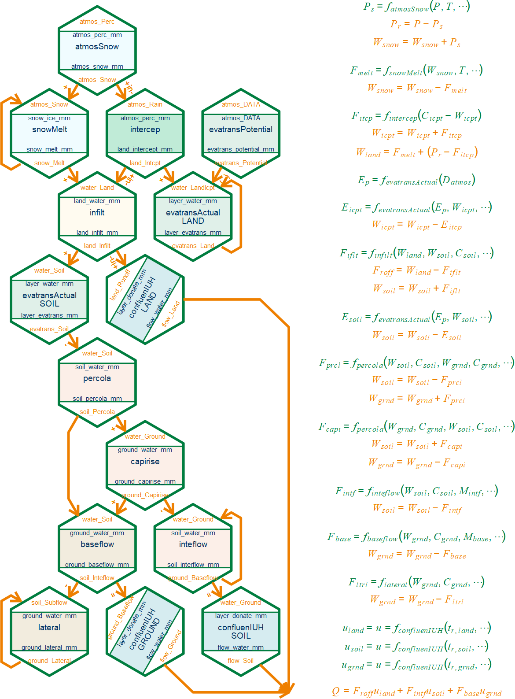

build_modell.RdBuild a hydrological model (based on c++) with EDCHM modules. The EDCHM-standard-structure include 15 process:

Some of them can be set in "NULL", means without this process.
stmosSnow with input data
stmosSnow and snowMelt
evatransPotential with input data
intercep and evatransLand (evatransActual)
intflow and confluenSoil (confluenIUH)
capirise
lateral
build_modell(process_method, path_model, name_model)named char vector, some like example.
It must contian all the 15 processes. But you can set process in "NULL", when it not necessary.
char of path, path to space the c++ source files
char, name of the model
the range of parameters
my_process_method <- c(
atmosSnow = "atmosSnow_ThresholdT",
evatransPotential = "NULL",
evatransLand = "evatransActual_SupplyRatio",
evatransSoil = "evatransActual_SupplyRatio",
intercep = "intercep_Full",
snowMelt = "snowMelt_Kustas",
infilt = "infilt_AcceptRatio",
percola = "percola_SupplyRatio",
inteflow = "inteflow_GR4Jfix",
capirise = "capirise_HBV",
baseflow = "baseflow_SupplyRatio",
lateral = "lateral_GR4Jfix",
confluenLand = "confluenIUH_Kelly",
confluenSoil = "confluenIUH_Kelly",
confluenGround = "confluenIUH_Nash"
)